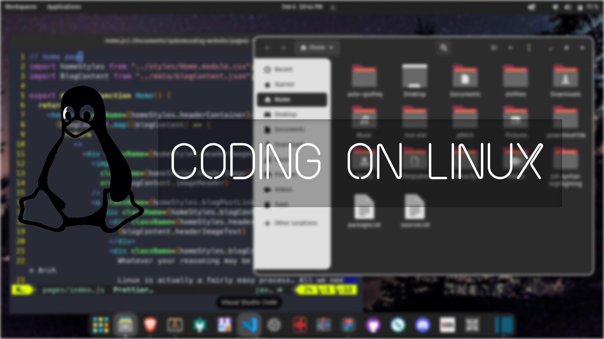

Setup Coding Environment On Linux


Setting up Linux for development could be a difficult task
for a beginner. Don't worry because this blog shows the
process of setting up a
development environment in Linux
Note: This blog has instructions for Debian or Ubuntu distros